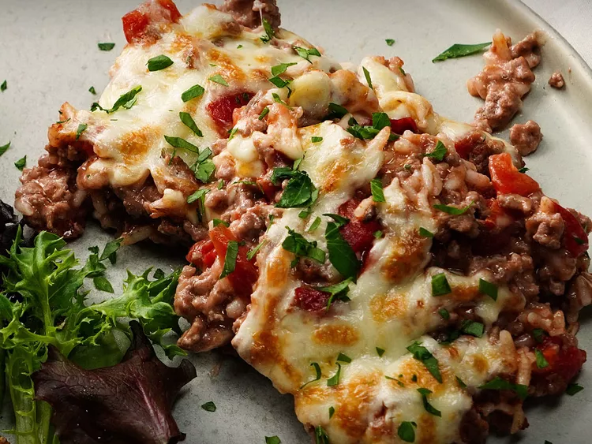

Description
A lasagna is a type of pasta originating from Italy, specifically from the Emilia-Romagna region
It is a wide, flat sheet of pasta, often with rufled edges, designed for layering with sauces and cheeses.
Ingredients:
- Meat: Ground beef, Italian Sausage, or a combination of both are commonly used.
- Tomato Sauce: Canned crushed tomatoes, tomato paste, or homemade sauce made with fresh tomatoes.
- Cheese: Mozzarella, Parmesan, Ricotta, and Cottage cheese are staple cheeses in lasagna recipes.
- Pasta: Lasagna noodles (wide flat noodles) are the traditional choice.
- Aromatics: Onion, garlic, and sometimes bell peppers or mushrooms add flavor to the meat sauce.
- Herbs and spices: Italian seasoning, oregano, basil, salt, and pepper are commonly used to season the dish.
- Eggs: Beaten eggs are often used to enrich the ricotta cheese mixture.